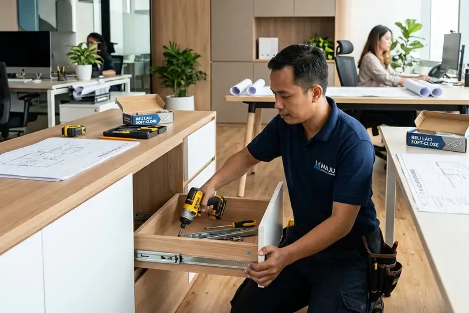

Daftar Isi
- Apa Itu Jasa Kontraktor Lemari Kantor?
- Mengapa Desain Lemari Sudut Penting untuk Kantor?
- Bagaimana Sistem Rel Laci Memengaruhi Daya Tahan Lemari Arsip?
- Kapan Waktu yang Tepat untuk Renovasi Lemari Kantor?
- Apa Saja Faktor yang Memengaruhi Biaya Jasa Kontraktor Lemari Kantor?
- Bagaimana Cara Memilih Kontraktor Lemari Kantor yang Tepat?
- Apa Saja Kesalahan Umum saat Menggunakan Jasa Kontraktor Lemari Kantor?
- FAQ
Jasa kontraktor lemari kantor adalah layanan profesional yang menangani desain, pembuatan, dan renovasi lemari kantor sesuai kebutuhan ruang, mulai dari lemari sudut hingga sistem rel laci dan pelapisan ulang HPL.
- Jasa kontraktor lemari kantor mencakup desain, produksi, pemasangan, dan perbaikan lemari.
- Lemari sudut membantu memaksimalkan area yang sering terbuang di ruang kantor.
- Rel laci double track menentukan daya tahan dan kapasitas beban laci arsip.
- Renovasi HPL menjadi solusi hemat biaya dibanding mengganti lemari baru.
- Memilih kontraktor yang tepat mengurangi risiko hasil kerja yang tidak sesuai spesifikasi.
Apa Itu Jasa Kontraktor Lemari Kantor?
Jasa kontraktor lemari kantor adalah penyedia layanan yang merancang dan membangun lemari penyimpanan untuk kebutuhan operasional kantor, baik unit baru maupun perbaikan unit lama.
Layanan ini umumnya mencakup konsultasi tata ruang, pemilihan material, produksi di workshop atau langsung di lokasi, hingga pemasangan akhir. Kontraktor yang berpengalaman biasanya juga menyediakan opsi custom, seperti penyesuaian ukuran lemari terhadap sudut ruangan yang tidak simetris atau kebutuhan kapasitas beban tertentu untuk arsip berat.
Layanan ini dibutuhkan oleh berbagai jenis kantor, dari kantor kecil dengan ruang terbatas hingga kantor korporat dengan kebutuhan penyimpanan arsip dalam jumlah besar. Kontraktor lemari kantor umumnya digunakan saat kantor pindah lokasi, melakukan renovasi interior, atau saat lemari lama sudah rusak dan tidak lagi efisien digunakan.
Mengapa Desain Lemari Sudut Penting untuk Kantor?
Desain lemari sudut penting karena sudut ruangan sering menjadi area mati yang tidak termanfaatkan, padahal area tersebut dapat menampung unit penyimpanan tambahan tanpa mengurangi ruang gerak.
Banyak ruang kantor memiliki sudut yang sulit diisi dengan furnitur standar berbentuk persegi. Lemari sudut custom dirancang mengikuti bentuk ruangan sehingga area tersebut tetap fungsional. Pendekatan ini umumnya digunakan pada ruang kerja dengan luas terbatas atau pada kantor yang ingin memaksimalkan kapasitas penyimpanan tanpa menambah jejak furnitur di lantai.
Selain fungsi penyimpanan, lemari sudut yang dirancang dengan baik juga dapat membantu menjaga alur sirkulasi ruangan tetap lancar, karena tidak menghalangi jalur utama pergerakan staf.
Bagaimana Sistem Rel Laci Memengaruhi Daya Tahan Lemari Arsip?
Sistem rel laci menentukan seberapa lancar laci dapat dibuka-tutup serta seberapa besar beban yang dapat ditampung tanpa risiko macet atau rusak.
Rel laci double track umumnya dipilih untuk lemari arsip karena mampu menopang beban dokumen dalam jumlah besar secara lebih stabil dibanding rel single track. Pemilihan rel yang tepat dapat memperpanjang usia pakai lemari, terutama pada laci yang digunakan setiap hari untuk menyimpan berkas kantor.
Faktor lain yang memengaruhi daya tahan rel laci antara lain material bearing, mekanisme peredam (soft-close), dan cara pemasangan pada rangka lemari.
Kapan Waktu yang Tepat untuk Renovasi Lemari Kantor?
Waktu yang tepat untuk renovasi lemari kantor adalah saat engsel mulai kendor, permukaan lapisan terkelupas, atau laci sudah sulit dibuka meski sudah diperbaiki sebagian.
Renovasi umumnya menjadi pilihan yang lebih hemat dibanding penggantian unit baru, terutama jika kerangka lemari masih dalam kondisi kokoh dan hanya bagian permukaan atau mekanisme yang mengalami kerusakan. Layanan renovasi biasanya mencakup penggantian lapisan HPL, perbaikan engsel, dan penyesuaian ulang rel laci.
Kantor yang ingin memperbarui tampilan ruang kerja tanpa mengganti seluruh furnitur juga sering memilih opsi renovasi sebagai solusi jangka menengah.
Apa Saja Faktor yang Memengaruhi Biaya Jasa Kontraktor Lemari Kantor?
Biaya jasa kontraktor lemari kantor umumnya dipengaruhi oleh jenis material, tingkat kerumitan desain, ukuran unit, serta apakah pekerjaan bersifat pembuatan baru atau renovasi.
Beberapa faktor yang biasa memengaruhi estimasi biaya antara lain:
- Jenis material utama, seperti multiplex, MDF, atau particle board
- Jenis lapisan permukaan, seperti HPL, melamic, atau duco
- Kompleksitas desain, termasuk penyesuaian untuk sudut ruangan tidak simetris
- Jenis dan kualitas rel laci serta engsel yang digunakan
- Skala pekerjaan, apakah satu unit atau beberapa unit sekaligus
Menurut Asosiasi Industri Permebelan dan Kerajinan Indonesia (HIMKI), pertumbuhan sektor furnitur domestik pada 2025 turut didorong oleh permintaan furnitur kantor custom yang terus meningkat seiring pertumbuhan sektor perkantoran. Biaya yang dikeluarkan dapat bervariasi tergantung kondisi lapangan dan spesifikasi yang disepakati dengan kontraktor.
Bagaimana Cara Memilih Kontraktor Lemari Kantor yang Tepat?
Cara memilih kontraktor lemari kantor yang tepat adalah dengan memeriksa portofolio pekerjaan sebelumnya, memastikan adanya survei lokasi, dan meminta rincian spesifikasi material secara tertulis.
Beberapa hal yang perlu diperhatikan saat memilih kontraktor:
- Portofolio proyek sejenis, terutama untuk kebutuhan custom seperti lemari sudut
- Kejelasan proses kerja, mulai dari survei, desain, produksi, hingga pemasangan
- Transparansi spesifikasi material dan estimasi biaya sejak awal
- Garansi pekerjaan, terutama untuk komponen seperti engsel dan rel laci
- Kemampuan menangani revisi desain sesuai kebutuhan ruang
Kontraktor yang transparan sejak tahap konsultasi awal umumnya lebih dapat diandalkan untuk proyek jangka panjang, termasuk kebutuhan perawatan atau renovasi di masa mendatang.
Apa Saja Kesalahan Umum saat Menggunakan Jasa Kontraktor Lemari Kantor?
Kesalahan umum yang sering terjadi antara lain tidak melakukan survei lokasi sebelum produksi, memilih material tanpa mempertimbangkan kebutuhan beban, dan tidak menanyakan garansi pekerjaan.
Kesalahan lain yang cukup sering ditemui:
- Mengabaikan pengukuran sudut ruangan secara presisi sebelum desain lemari sudut dibuat
- Memilih rel laci berdasarkan harga termurah tanpa mempertimbangkan kapasitas beban
- Menunda renovasi hingga kerusakan meluas ke bagian rangka lemari
- Tidak menyepakati linimasa pekerjaan secara tertulis di awal proyek
Menghindari kesalahan-kesalahan ini dapat membantu memastikan hasil akhir sesuai kebutuhan dan lebih tahan lama.